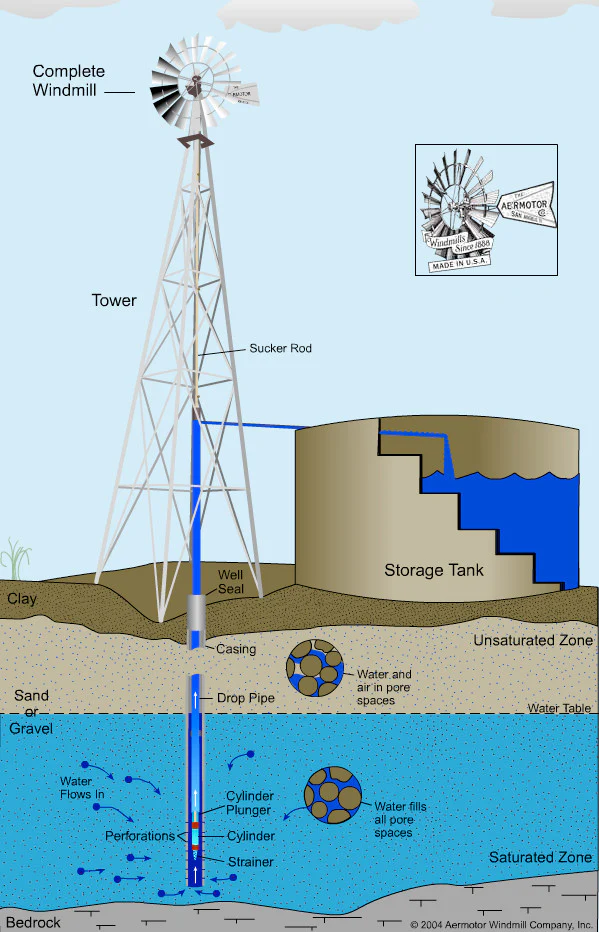
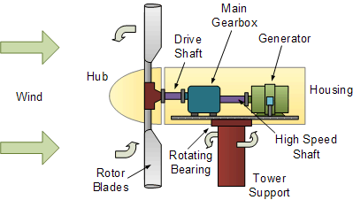

Working Principle
Wind turbines work on a simple principle: instead of using electricity to make wind—like a fan—wind turbines use wind to make electricity. Wind turns the propeller-like blades of a turbine around a rotor, which spins a generator, which creates electricity.
A windmill converts wind energy into rotational energy by means of its blades. The basic principle of every windmill is to convert the kinetic energy of wind into mechanical energy which is used to rotate the turbine of an electrical generator to produce electricity.
When the wind is pushed away from the blades of the windmill, the wind must push back with an equal amount of force. This is an example of Newton's 3rd law: “For every action, there is an equal and opposite reaction”.
Tidal stream turbines are often described as underwater windmills. They are driven by the kinetic energy of moving water in a similar way that wind turbines use moving air.
Direct-Drive Yaw System. The yaw motors power the yaw drive, which rotates the nacelle on upwind turbines to keep them facing the wind when the wind direction changes.
That up-and-down motion drives a long sucker rod, also known as a pump rod, up and down inside of a pipe in the well. Attached to the end of the pipe is a cylinder with a sealed plunger going up and down inside that forces the water up the pipe. Each upstroke pulls water into the cylinder.
The generator in wind turbines produces Alternating Current (AC) electricity. Some turbines convert this AC electricity to Direct Current (DC) with a rectifier, and then back to AC using an inverter. The purpose of this, is so the frequency and phase of the electricity is in line with that supplied by the grid.

